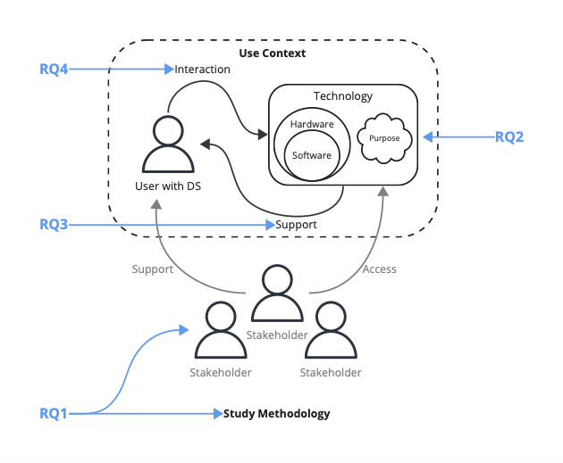

Research Project · Published · TACCESS 2025
PRISMA Literature Review on Assistive Technologies with Adults with Down Syndrome

Abstract
This article presents a scoping review of assistive technologies designed to support Adults with Down Syndrome (AwDS), focusing on individuals aged 18 and older. We define assistive technologies as digital tools used directly by AwDS to assist them in performing a task or achieving a goal. The review aimed to: (1) examine how researchers have involved AwDS in the design and evaluation of technologies; (2) identify the types of technologies explored and the motivations driving their use; (3) assess how these technologies support abilities across life domains; and (4) analyze the reported benefits, challenges, and design implications. Following PRISMA-ScR guidelines, we searched six academic databases (ACM Digital Library, IEEE Xplore, Compendex, Scopus, ScienceDirect, and SpringerLink), resulting in 1,944 articles. After applying the inclusion criteria, we identified 20 studies for in-depth analysis. Methods ranged from experimental to participatory design, with inclusive strategies such as caregiver involvement, visual aids, and personalized supports frequently reported. Technologies identified included computers and web platforms, mobile applications, AAC systems, smart home tools, and social robots, supporting areas like daily living, communication, learning, navigation, and health. Reported benefits included increased independence and digital inclusion, enhanced communication, expanded social connection, greater confidence and engagement, and enhanced skill development. Common challenges included interface complexity, lack of context-aware interaction, environmental and sensory constraints, and uneven impact across users. Based on these findings and paper analysis, we outline five design recommendations: reduce interaction complexity, support engagement through feedback and flexible pacing, enable personalization and long-term adaptability, provide accessible pathways to secure system access, and embed technology within everyday routines. This review emphasizes the importance of inclusive, user-centered systems that align with the goals, contexts, and lived experiences of AwDS.We searched six research databases and started with nearly 2,000 articles. After narrowing down, we looked at 20 studies in depth, all about assistive technology built for adults with Down syndrome (age 18 and older). The technologies covered areas like daily living, communication, learning, and health. Benefits included greater independence, better communication, and increased confidence. Common challenges included complicated designs and tools that did not adapt well to each person. Based on our review, we suggest five design ideas: keep interactions simple, give helpful feedback, allow personalization, make it easier to access the system, and build technology into everyday routines.